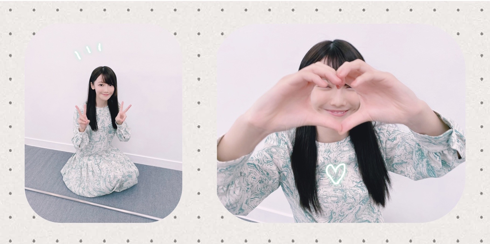
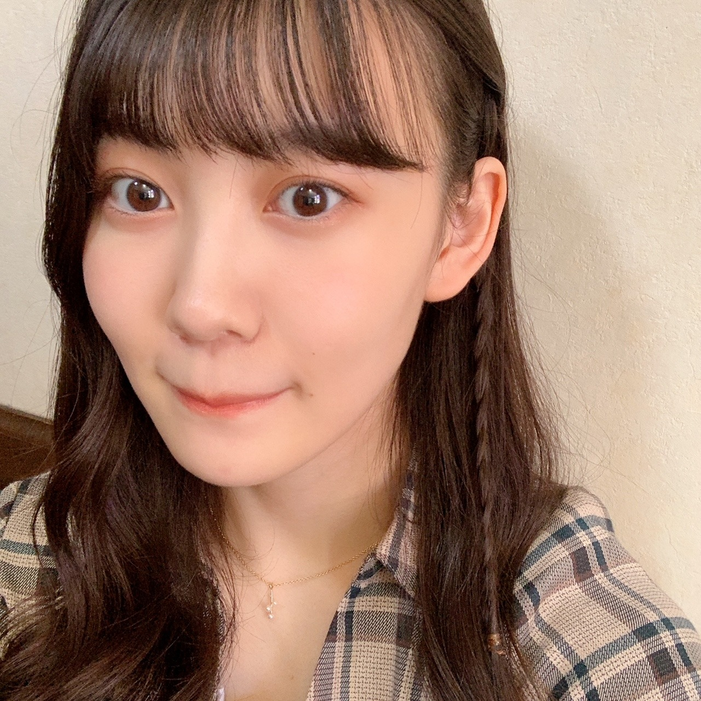
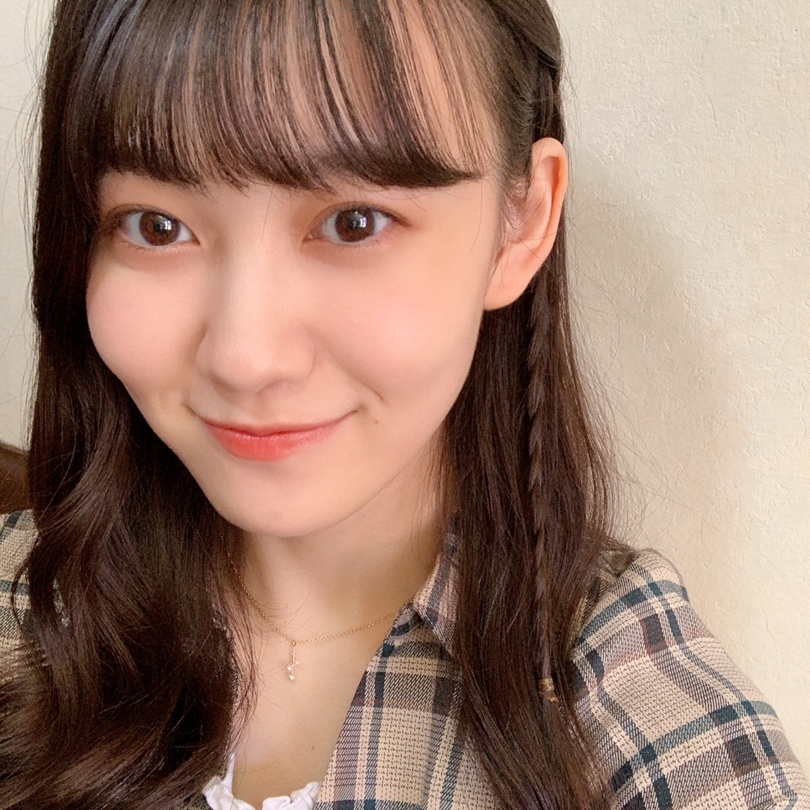

2020/1115Sunお疲れ様です！NEWSがとまらんぜ 林瑠奈です。
乃木坂46、4期生の林瑠奈です。
神奈川県出身高校2年生17歳
華咲くセブンのティーンの林瑠奈です。
負けるなしょげるな林瑠奈、今日も1日頑張るな
(ピンポーン)


2020/1114Sat温かさ2倍。佐藤璃果
こんにちは~
乃木坂46 (新)4期生 岩手県出身
佐藤璃果です


白石麻衣さんのコラボカフェに
行かせて頂きました！⸜( •⌄• )⸝
何故かフラッシュがたかれてしまいました。
私はこちらのカフェラテを頂きました。
皆さんも是非！行ってみてくださいね
行った方は何を食べたのかとか感想を
書いてくださると嬉しいです。
私このカフェラテを飲むまで、
1日カフェインを摂取していなかったので、
余計に美味しく感じました。
上に乗っているホイップクリームのクリーミーさがとても相性が良くて美味しかったです。
☺︎

向かい側はカレーを
食べるさくちゃんでした。
沢山写真撮っちゃいました₍ᐢ.ˬ.ᐢ₎
沢山お話出来て嬉しかったです。
緊張して質問攻めしてしまったけれど
色々知れて嬉しかったです。
お話出来て幸せでした~
カレー好きな共通点発見です。
カレーを美味しそうに食べていました。
写真を撮る時だけ透明な
カバーをピラッとさせて頂きました。
そして！

あやめんとマネージャーさんに
撮って貰ったのです！
｢おはようでやんす｣と言ってくる
あやめん可愛いです~❅*॰ॱ
~~~~~~~~~~~~~~~~~~~
そして、11月12日、｢のぎおび｣
ありがとうございました。
次は緊張しないで出来るといいなぁあ。
皆さんとコミュニケーションが取れて
とてもとても嬉しかったです。
高山さんからの宿題も嬉しかったです。
いつか高山さんに、私に似合う髪型を教えて欲しいです( ˊ꒳ˋ ) ᐝ
桃子さんは麦茶が好きなんですね！
素敵だぁ、
~~~~~~~~~~~~~~~~~~~
11月10日、阪口珠美さん
❁お誕生日おめでとうございます❁
オシャレで立ち姿から綺麗な珠美さん！
ダンスもしなやかで綺麗で...素敵です。
この間、撮影の際に、その衣装可愛い~！
とサラッとお話して下さったことが
とてもとても嬉しかったです︎︎︎︎︎☺︎
たまたま、私と珠美さんと久保さんで
少し同じになった時に、
同い年だもんね！と話してくださって...
珠美さんが私を同い年だと認識してくださっていた事が嬉しかったです！
これからお話出来たら嬉しいです！
素敵な一年になりますように。
~~~質問~~~
〇乾燥肌に悩んでいるけど、良い対策はあるかな？
一緒にパック返ししましょー
〇ベロアと言えば額縁衣装ですが（？）、璃果ちゃんは着てみたい衣装ってありますか？
確かに！！
期待衣装たくさんあるなぁ、、、
額縁衣装も憧れですきです。
〇最近ハマってる飲み物とかはありますか？？
相変わらずコーヒーと
レモン水です。
〇らじらーに出る時に意識してやったこととかある？？
声を小さくならないようにすることと、
表情が見えないので、明るい声をより意識
受け身にならない
などなど色々です。
聞いてくださってありがとうございます。
まだまだ課題が沢山です...
〇年越しの瞬間ってなにしてるの？
普段なかなか会えない他校のお友達と
一緒に神社に行くの！
初詣！
〇好きなパンはありますか？
デニッシュ、
タルト、キッシュ(パンでは無いかも、、)
塩パン、、、、、、etc
〇昨日のらじらーすごく話すの上手いなぁって思ってんですけどお喋りは好きですか？
全然上手くないですよ！
でも今まで上手く話せなくて後悔ばかりだったので少しでもそう思って頂けたら幸いです。
好きです。
〇褒める時のコツはなんですか？
この人いい人素敵な人って
思うこと
〇璃果ちゃんは癖っ毛？元からまっすぐ？？
まっすぐです！
〇質問！俺も東北出身なんだけどいつか握手会が始まったら東北弁で話しかけてもいい？笑
話してけらい~！
〇りかちゃん的に初めましての人とかと楽しくお話できるコツとかありますか？？
私は、食の話しがちです。
あとは、地元のお話をお互いにします！
~~~~~~~~~~~~~~~~~~~
明日はるなぴです。
るなぴは偉いよ~~
~~~~~~~~~~~~~~~~~~
皆さんにとって
素敵な1日になりますように。

またね。
好きな卵料理はなんですか？
私はゆで卵＋塩
#41 りか
2020/1113Friわたしの憧れ ☺︎ 黒見明香(16)
寒いねー(*´-`) 今週もお疲れ様でした✩︎⡱
ココを見つけてくださり ありがとうございます♪
乃木坂46 新４期生の黒見明香です。
すこーしだけ自己紹介させてください☺︎
♪:*:･･:*:･･:*:･･:*:･･:*:･･:*:･♪:*:･･:*:･･:*:･･:*:･･:*:･･:*:･♪
黒見 明香（くろみ はるか）
2004年1月19日生まれ 16才
香港生まれ・東京都出身です
あだ名： くろみん・黒見ちゃん
3の倍数9・6・3(くろみ)
と覚えてもらえたら嬉しいです♪
＊
↓頂いたコメントから
◎ 猫耳SHOWROOMでみり愛さんが「ほっとけないメンバーにゃんばー１」に選んで、凄く応援してくれていましたよ。
本当に ビックリしましたー(ﾟ０ﾟ)!!
わたしの不甲斐ない必死ダンスに
『クロミ、負けるな、頑張れっっー！』
て後ろからずっと応援して下さってたと・・・
とっても驚きました！
大切な先輩にご心配かけてしまい申し訳なく...><
・・・そして後輩たちを見守ってて下さる
渡辺みり愛さん♡ 伊藤純奈さん♡の心の温かさ✨
"必死でついてけてなくて、自分の事でいっぱいいっぱいなのに、
乃木坂の先輩方は、後ろを振り返って、全体を見て
困っているメンバーのことまで気を配って下さっているんだなぁ...
本当に凄いなぁ..."と胸がジーンとしていました...((〃ω〃))
＊
"めちゃ仲良いマブダチだと思ってるから〜"
とお話して下さる優しさ、お二人の仲良さ、、、
面白すぎるトークに聴きながらわたしも爆笑して、
すごく幸せな気持ちを頂きました(*´-`)♡
＊
みり愛さん♡純奈さん♡本当にありがとうございます。
美しくしなやかなお二人のダンスを、カッコいいお姿を、
いっぱい見習って、一生けんめい頑張ります (*ˊᵕˋ*)੭
大好きで、憧れのお二人です✩︎⡱
♪:*:･･:*:･･:*:･･:*:･･:*:･･:*:･♪:*:･･:*:･･:*:･･:*:･･:*:･･:*:･♪

-:-:୨୧:-:- 嬉しくも、乃木フェスで 初めて着させていただいた、憧れの「しあわせの保護色」の衣装だよ〜☺︎
【 乃木坂46 リズムフェスティバル♪ 】
もうすぐ、11月21日に3周年を迎える乃木フェス
新たに私たち新4期生も参加させていただいて
「3周年カウントダウンキャンペーン」中だよ〜
＊
マネージャーさんが撮って下さったオフショット、
先輩方の大切な衣装を着せていただくときは
とてもとても緊張して、背筋が伸びる想いがします✩︎⡱
＊
⚫︎今回のブログにWピースの写真が1枚も無い！？笑
撮影中は、いつもワンパターンなWピースでは
なかったよ〜(*´-`)ふっふ笑
⚫︎実は自分も音ゲーあまり得意じゃない、頑張ってるんだけど、中々フルエク出来ないんだよね。
わたしもなかなか上手くできなくて・・・
と前回書いていたら、コメントにリズムゲームのコツやポイントを送って下さったので、
いちばーーーん下の、アンコール内、ゲームコーナーに情報載せさせてもらったので、
よかったら試してみてくださいね (*ˊᵕˋ*)੭
乃木フェス、ぜひ楽しんでみてね✨
♪:*:･･:*:･･:*:･･:*:･･:*:･･:*:･♪:*:･･:*:･･:*:･･:*:･･:*:･･:*:･♪
-:-:୨୧:-:- 秋晴れの日、お散歩したくなるよね〜？すこーし色づいてきたよ☺︎✨
⚫︎東京の方も紅葉してきたら、紅葉バックのくろみんみたいな〜？
⚫︎今年は台風が上陸しなかったから葉が落ちず、例年より紅葉がきれいなんだってね。一緒に紅葉を見に行こうよー？
リクエストありがとう (*ˊᵕˋ*)੭
まだ緑も残っているけれど、すこーーしだけ
色づいてきた道をお散歩してきたよ〜♬
＊
みんなの地元はどんな様子かなぁ？
一緒に紅葉探しにお散歩した気持ちで
お土産拾ってみたよ〜！
♪:*:･･:*:･･:*:･･:*:･･:*:･･:*:･♪:*:･･:*:･･:*:･･:*:･･:*:･･:*:･♪

-:-:୨୧:-:- 落ち葉と、幼い頃、田舎のおじいちゃんと作ったどんぐりマウスちゃん達を添えて♬ 笑・・え、要らないの〜？笑
【 乃木坂46 4期生ライブ 2020✨ 】
★「8th YEAR BIRTHDAY LIVE 2020.2.21～2.24 NAGOYA DOME」
全200曲、大好きなユニット曲も、あの曲も、、
2月の名古屋ドームで初めて、
乃木坂ファンの皆さまの前で自己紹介させていただいた時の
緊張もよみがえります・・・><
あの時、マネージャーさんが
♪:*:･･:*:･･:*:･･:*:･･:*:･･:*:･♪:*:･･:*:･･:*:･･:*:･･:*:･･:*:･♪

-:-:୨୧:-:- 璃果ちゃんが撮ってくれていた、不思議なananオフショットシリーズ☺︎笑
【 ananオフショット✨ 】
anan2224号『女子の流行りモノ '20秋』撮影の時に、
璃果ちゃんが撮ってくれてたオフショットだよ〜♪
壁際にちょこんと小さく控えてる様子と、
ハートで顔がつぶれてるお写真(笑)
＊
やっぱり、急にカメラを向けられると
ワンパターンなダブルピースをしてしまうのであった・・・( ´_ゝ`)
＊
この時、初めて撮影でネイルしていただいたのです✨
全然写ってなくてごめんね\(//∇//)\
お姉さんになった気がして、すごく嬉しかったよー♪
ananオフショットはココだよ〜☺︎↓
♬ *。♩*。♬
【 鈴木絢音さん♡『光の角度』 】
⚫︎黒見ちゃんはあれだね、絢音さんリスペクト軍団だね。笑
⚫︎絢音さんの写真集の感想を次のブログで言いたくて言いたくてウズウズしてるでしょ？笑
ナゼ、ワカッタノカナ？笑
届いたよー！美しいポストカードも✩︎⡱
もちろん好きな写真はたくさん✨あるのですが
海の中から真上を見上げていらっしゃる写真が
心の美しさや真っ直ぐな気持ちが伝わってくるようで
すごく好きです((〃ω〃)) 赤ワンピも素敵ですよね♡
皆んなはどうだったかなぁ。。？
スペシャルブックのインタビューもジーンとしました。
"どんな時も一生懸命頑張っていかなければ"と
改めて日々の大切さを教えて下さいました...✨
♪:*:･･:*:･･:*:･･:*:･･:*:･･:*:･♪:*:･･:*:･･:*:･･:*:･･:*:･･:*:･♪
ブログやお手紙で、たくさんのコメントや感想送って下さり
本当にありがとうございます✩︎⡱
今回、初めてコメントします！というあなたも、
もうコメント○回目なんだよ〜というあなたも、
大切な時間を使ってお話しして下さり
本当にありがとうございます✨
あなたに出逢えた奇跡に、感謝しながら、
大事に、一つずつ全部読ませて頂いています((〃ω〃))
皆さんのことを知ることが出来る、
私の１日の中で『１番幸せな時間』です♩
直接お話しできる時が、 待ち遠しいです✩︎⡱
＊
今週も寒い日が続いて、仕事や勉強が忙しかったり、
なんだか体調イマイチだよー、疲れちゃったよーって方も
本当に、お疲れ様でした✩︎⡱
きっと心も、身体も、しんどい時もあるかと思います。。
どうぞ、皆さんが 少しでも
ひとときリラックスできますように...✩︎⡱
と願っています(*´-`)
初めて会える日を、楽しみに待っています♪
＊
明日は、歌声も可愛い璃果ちゃんですよー♬
読んでくださり、本当にありがとうございます☺︎
次回も、会えたら嬉しいなぁ✨
またねヾ(･ω･*)
くろみはるか☺︎
☆ 本日のあなたのラッキーナンバー：❸ と ❼
♪:*:･･:*:･･:*:･･:*:･･:*:･･:*:･♪:*:･･:*:･･:*:･･:*:･･:*:･･:*:･♪
・
・
・
＜ちょこっとアンコール♬笑＞
今回、お試しで短いブログを目指してみたよー！
♬ *。♩*。♬
⚫︎個人ブログになったらショートバージョンに変えればいいかな？個人ブログやモバメを楽しみにしています！
⚫︎思い悩んでる人には是非とも読んでもらいたい、優しいブログ。それでも今後短く纏めなければならない局面もあるかもしれないから、練習してみよう？
○ブログの事、沢山のアドバイス、意見教えてくれて本当にありがとうー！！
みんなが考えてくれたこと、一つ一つ大事に読ませていただいたよ〜 (*ˊᵕˋ*)੭
♬ *。♩*。♬
⚫︎いつの日か、握手会が再開できたら「アチョー」やってくださいね笑
もし「アチョー」黒歴史になってたらごめんなさい笑
⚫︎矢久保ちゃんのメール取ってるんだね！黒見ちゃんのブログは本当に丁寧で、まわりのことを気遣ってくれていて素敵、って言ってくれてたよ！
♬ *。♩*。♬
⚫︎フレームはピンク色多いよねやっぱりピンク色好きなの？
○うん！ピンクも好きです✨
♬ *。♩*。♬
⚫︎忍者の話笑っちゃった。小さいころ折り紙で手裏剣作ってたな～
⚫︎水遁の術はやったことあるけど、リコーダーで実行するとは...
横に穴が空いてるし、隠れる術で音が出る物を使うとは...天才だ。
「ミッキー、ラッキー、キウイ、ウィスキー」
これを毎日声に出して言うの！
最後の「キ」と「イ」はしっかり口を横に開いて発声するよ！
それと、トキメキ目と癒し目って分かるかな〜これは人を虜にする効果があるんだよ！
目の前にいる人を自分の虜にする！！みたいな感じで、発声練習をするよ！
ぜひ試してみてほしいな！くろみんのファンの方にも！
学校や家で毎日やってるから、前まで、苦笑いしかできなかった私でも、笑顔が上手になったよ！
♬ *。♩*。♬
⚫︎家族をフランス語でfamille(ファミーユ)と、言います。
Kuromi+familleで。Kuromille（クロミーユ）ファンの方々の呼称を考えてみました。
聞いてくれてありがとうー！
♬ *。♩*。♬
＜ゲームコーナー✨＞
⚫︎プロスピはしっかりアニバを引いてオーダーを強化したよ
◯私もアニバ60連しました〜！
30連と60連で欲しい選手1、2番がでて嬉しかったよ！
⚫︎ プロスピaでそろそろOBの選手が来る時期だけど、誰が来て欲しい？
◯野手がきて欲しいなぁ〜と思ってるよ
⚫︎ プロスピ極何体いるの？
◯全部で6体だよ〜！もっと野手の極みの選手を増やしたいなぁと思ってるよ！
⚫︎ プロスピは、次は来たるベストナイン&タイトルホルダーに向けて、時間を見つけて少しずつエナジーを溜めていこうと思っています！
◯私も頑張って貯めようと思ってるよ！
あなたもエナジー集め一緒に頑張ろうね☺︎
⚫︎ 最近一生懸命プロスピのマーケットのマニーを貯めるため試合を沢山プレイしています。
◯私もマーケットやってるよ！
大変だけど一緒に頑張ろうね☺︎
⚫︎ ps4 でやってる身からすると選手の動きのモブさの違いがありすぎてスマホには戻れそうにないです。是非やってみてください！！！
◯そうなんだね！教えてくれてありがとう☺︎いつかぜひできる機会があったらいいなぁ〜！
＜乃木フェス✨＞
⚫︎ 早速乃木フェスのガチャ引いて、くろみんのananコラボSSR当たったよ！٩( ᐛ )و
もう一つのSSRも当たるといいなぁ（╹◡╹）
ご報告まで！
◯乃木フェス引いてくれたあなた本当にありがとう☺︎
すごく嬉しいです！！
◎乃木フェスうまくプレイする方法、アイディア教えて貰ったので共有させてね✩︎⡱
⚫︎音ゲーのコツは多分、「焦らないこと」ではないかと思われます(笑)タブレットでプレイできれば、大きくてやり易いかも。
⚫︎タブレットを使っているのですが、僕はどの難易度でも、アイコンが流れてくる早さを
最大にしています！これで、優しい難易度から始めていってフルコンボしたら次の難易度へステップアップしていってできるようになっていきました！！
⚫︎プレイ中は画面録画をしておいて、どこを間違えたか確認したり、どんな感じでアイコンが流れているのか覚えたりして頑張って難しい曲でもできるようになっていきました！！
⚫︎イヤホンやヘッドホンをつけてプレイした方がよりリズムにのることができてやりやすくなりますよ！！
○送ってくれてありがとうー！
よかったら、参考に、一緒にプレイ楽しもうね〜ヾ(･ω･*)o
♬ *。♩*。♬
くるりさん、Novelbrightさん、平野綾さん、米米CLUBさん、ナオト・インティライミさん、hideさん素敵な曲、歌詞教えてくれてありがとうー！
試合結果も、24などオススメドラマも、ひめたんビームや太陽ギャグのこと、ドライブや猫ちゃんのこと、筋トレのお話、口笛や雪虫、付箋で励ましてくれた友達のこと、誕生日のこと(すごい!おめでとう)、放送委員で紹介したよてお話(ありがとうー!)からお腹痛くなるまで笑ったエピソード、忍者警察やきこりになりたかったお話もありがとう！
・後輩と衝突しちゃって凹んでるよーて方も(美味しいもの食べて気持ちが楽になるといいなぁ...)
・大学面接だよー！(頑張ってー (. ≧ω≦)ﾉ気持ちが伝わりますように✨)
・お祖父ちゃんがいなくなって寂しいエピソード(きっとそばにいるよ！辛いけど元気出してね><)
♬ *。♩*。♬
そして、お誕生日を迎えるあなたへ・・
✨HAPPY BIRTHDAY✨
どうぞ素敵な一年になりますよう✩︎⡱
♪:*:･･:*:･･:*:･･:*:･･:*:･･:*:･♪:*:･･:*:･･:*:･･:*:･･:*:･･:*:･♪
ここまで読んでくださったアナタ、ほんとうにありがとう♡
またねヾ(･ω･*)
2020/1112Thuこたつの季節☺︎弓木奈於
こんにちは！
ページをクリックしてくださり、ありがとうございます✨
乃木坂46 新4期生
京都府出身
弓木奈於（ゆみきなお）です( ¨̮ ) ( ¨̮ ) ( ¨̮ )
一週間がすごく早く感じました！( ¨̮ )
今日は、質問のお返事をさせていただきたいと思ちます˙˚⸜(* ॑ ॑* )⸝˚˙
それでは早速
❁お返事のコーナー❁
⚫︎なおちゃんはショートケーキ派？チョコケーキ派？それともフルーツケーキ派ですか！！！
究極の三択！
全部大好きなので、日によって変わっちゃいます( ˙༥˙ )
優柔不断なので先に選んでいただきたいです( ˙༥˙ )笑
⚫︎なおの好きすぎて困ってる食べ物は？
チョコレート\(ᯅ̈ )/
⚫︎なおの冬の楽しみBest3 なんでしょうか？
今年はいっぱいあるんです✨
ライブに舞台に...☺︎
今年に限らず楽しみにしている事は
1位 床暖房！
2位 家族で坊主めくりをする！
3位 サンタさん！
の3本です( ˶˙ᵕ˙˶ )
⚫︎ストレス溜まったらどーやって解消してる？
いっぱいいっぱいになる前に誰かにお話しするようになりました！
「考える事はいい事だけど、考えすぎて落ち込んでしまうぐらいなら行動してみよう！」
と以前お言葉をいただいたので、その言葉を大切にしています(*ˊᵕˋ*)
自分に合ったストレス解消法を見つけられるように一緒に頑張りたいです✨
少しでもストレス解消のお手伝いが出来るように、笑顔をお届け出来るように、頑張ります( ∩¨∩ )⚑︎⚐︎
⚫︎弓木ちゃんはお肉とお魚はどっちが好きか選べますか？？
最近寄せ鍋を食べてすごく美味しかったですし...
お肉を焼いて塩で食べるのも美味しいし...
鮭のムニエルも美味しかったし...
茄子と豚肉の炒め物も美味しいし...
選べませんԅ(¯﹃¯ԅ)
⚫︎ライブで歌ってみたい乃木坂の曲はありますか？？
『乃木坂の詩』を皆さんと一緒に歌いたいです✨
⚫︎弓木ちゃんは、『あ、もう冬だな』って感じる時はどんな時ですか？？
街行く方がコートを着ていらっしゃって、自分自身もなんの不安もなくコートを着る時です⸜(* ॑ ॑*)⸝
⚫︎ちなみに、ノートはもう燃やした？（笑）
実は愛用しているノートとペン、坂道研修生の時に「これからたくさん学んで行くために必要なものだよ☺︎」といただいたものなんです✨
お仕事の時は肌身離さず持っています！
坂道研修生として一緒に活動させていただいていたメンバーとお揃いなので、ライブリハーサルの時、美佑ちゃんのノートに間違えてメモしてしまった事もあります...( ˊᵕˋ ;)笑
⚫︎ 最近のマイブームは何かある？
豚汁です！！
⚫︎ 今、弓木ちゃんが、一番この時ですけど、やりたいこと、記録に、残したい事は、何かありますか？
今ここにいて、こうして皆さんとお話し出来ている事が心の底から幸せで
これからももっと大きな幸せをご一緒できるように頑張りたいなって思いますし
今、一つ一つの事、これからも、ずっと記録に残したいなって思います✨
真面目になってしまったので
ᕙ( ˙-˙ )ᕗ ﾏｯﾁｮ をどうぞ。
⚫︎ 冬服を選ぶ時の弓木さんなりの基準を教えてください！
最近は、動きやすいか、着膨れしないかを基準に選んでいますかね...
でも優柔不断でなかなか買えないんです( ˃ ˂ )
「これが絶対に欲しい！！」って1日経っても気持ちが消えなかったら購入します！
⚫︎ ナナマルサンバツの舞台に出演する奈於っち様にクイズ出しますね。
真ん中が黒い鳥ってなんだ？
...カラス？
安易な考えと見せかけて、答えは安易だというトラップですね？
（多分ちがう）
⚫︎ 3期生で最近、よく話すようになったメンバーはいますか？
まだたくさんお話しさせていただいた事はないのですが...
向井葉月さんはお会いするといつも笑顔でお話ししてくださいます✨
「ノギザカスキッツ ACT2」のトーク収録の時、
尼崎姉妹さんの妹オーディションに参加した役のVTRを先輩方と一緒に見せていただいて、
観た後も自分自身「大丈夫かな...」とすごく不安で押しつぶされそうだったのですが
向井葉月さんが掛けて来てくださって、「すごく良かったよ！！頑張ってるね！！✨」
と満面の笑みで声をかけてくださいました☺︎
いつも優しい心をいただいて、助けてくださいます✨
舞台「ナナマルサンバツTHE QUIZ STAGE O」でもご一緒させていただけるので、とても楽しみです(∩ˊᵕˋ∩)･*
⚫︎ 伊藤かりんさんのYouTubeは夜中とかに見るとお腹が空くねんけどゆみっきーはこの気持ち分かる？笑
ものすごくわかります...(´._.｀)
⚫︎ ライブのどこかで絶対ウインクするとかずっきゅんするとかカメラにパンチする、、、とかの何かしらの公約をぜひして頂けないでしょうか！！！笑笑
是非！！決まったらお伝えしますね(∩ˊᵕˋ∩)･*
⚫︎ 最近はハーフツインとかハーフアップとかしてないの？
\(ᯅ̈ )/
全くしていなかったです...笑
でも、好きって言ってくださったので似合うように頑張ります！！
いつもコメントありがとうございます( *ˊᵕˋ ) ⁾⁾
そして、
私が嬉しいことを皆さんが一緒に嬉しいって言ってくださって
こんなに幸せな事はありません✨
改めて、いつもありがとうございます✨
---------- ｷﾘｶｴ ---------
先日、日刊スポーツさん内の「坂道の火曜日」というコーナーに掲載していただきました✨
発売日、
家族から連絡が来て、写真もいっぱい送ってくれて
家族共々
「有り難いね」
と深々と頭を下げておりました( *ˊᵕˋ ) ⁾⁾✨
11月13日発売の
乃木坂46新聞にも掲載していただきます✨
是非、よろしくお願い致します(*ˊᵕˋ*)✨
---------- ｷﾘｶｴ ---------
明日は、黒見ちゃんです！
ドライヤー貸してくれてありがとう✨
黒見ちゃんと一緒にいると落ち着きます(∩ˊᵕˋ∩)･*
美佑ちゃん
私は今、豚汁が食べたい。

思ったより近くて、すみません。汗
最後まで読んでくださり、ありがとうございました✨
皆さん、達者でな☺︎
ﾀﾞｯｼｭ!≡≡≡ﾍ(*--)ﾉ 逃
2020/1111Wed控えめなチェック 松尾美佑
今日は
いちいちいちいち
わんわんわんわん
な日ですね。
千葉県出身
高校2年生
16歳
今日はちょっぴり寝坊しちゃいました、
松尾美佑です¨̮
マイブームはメープルナッツですꪔ̤̥
今の気分は、ジェットコースターに無性に乗りたい気分です。
この気分たまにありますよね、共感して欲しいです
ʕʘ̅͜ʘ̅ʔ

髪の毛いつもと違う巻き方したつもりだったんですけど、あんまり分かりませんね(´◔_◔)
私の髪の毛の話はポイッとしておいて、
11月10日からスタートしました！
『ノギザカスキッツ ACT2』！！！
ノギザカスキッツに参加させて頂いてから、新しい自分の気持ちと出会うことが多くて嬉しいです！
考えたり向き合ったりする事が増えて、これが成長になってたらいいなぁって思います¨̮
3期生さんも合流されて、これからもっとパワーアップして楽しんで頑張ります！
(ง ꙭ)ง(ง ꙭ)ง(ง ꙭ)ง
そして！
4期生ライブの開催が発表されました！！！
いぇーーーい！！
本っ当に楽しみです
まだ皆さんにはお会いすることが出来ませんが、配信ライブという形で遠くにいる方へも届けることができるのがとても嬉しいです☺︎
皆さんの心をドキッとさせられるようなパフォーマンスを届けられるように精一杯頑張ります！
楽しみで楽しみで楽しみです。
自分の好きなことを楽しんで好きなだけ頑張れる環境に本当に感謝しています！
乃木坂46 4期生ライブ 2020
12月6日 です！


ちょっとだけの三つ編みがポイントです。
お返事！
✽ 最近ハマってる食べ物は？
メープルナッツ！もうすぐリスになれそう
✽ クリスマスプレゼントで1番欲しい物は？
塗り絵！
あと新しいクリスマスオーナメントも！
✽ 夜更かしできる秘技とかありますか？
目を閉じない。 ？？
✽ 漢検何級受けたの？？
ひみつー！絶対教えないよ (⃔ ･ᴗ･ )⃕↝
ただ言えるのは過去に5回漢検を受けて私は1回しか受かったことが無いということです。
✽ ミュウちゃんは恐竜好きですか？
今使ってる携帯のケースは恐竜さんが立体的に6匹ついています。
「どちらかと言えば好き」に分類されると思います。
11月10日！
阪口珠美さん、お誕生日おめでとうございます！
46時間テレビの時阪口珠美さんの電視台のたまトレをブース見てて、本当に明るくって楽しくって何よりも物凄くスタイルが良くて凄く印象に残っています！
これからノギスキの時とかにお話できたら嬉しいなと思います！
素敵な一年になりますようにと願っています！
先日、テストがあったんです。
だから前日に暗記科目だけでもと思って、
生物を沢山お勉強したんです。
そしたらなんと、私の受験科目は生物じゃなくて世界史でした。
元気だして頑張りましょう！
どーにかなる！
明日は〜
なお〜〜〜〜〜〜〜〜〜
今何食べたい？
からいものたべたい。
ミュウでした¨̮

襟がチェックです。
ばいっっっっっっっ( Ꙭ )/''